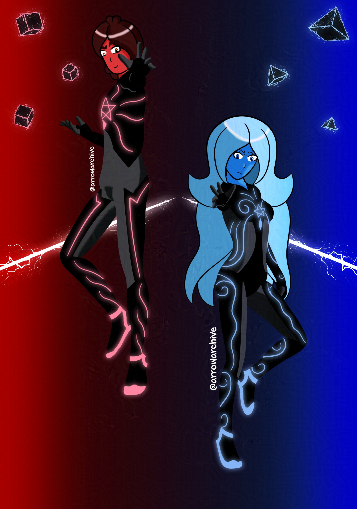

Impossible Geometry
I wasn't sure if this would look good as I was drawing this, but I was surprised with the feedback I got from it.
I was inspired to draw this after listening to "Impossible Geometry" by The Stupendium and Chi-Chi. It's about being obsessed with a game called "Beat Saber," but the artwork for the single and the composition gave it a futuristic sound. I wanted to capture it the best I could, but with my characters instead.
I chose Pyro and Aqua since they fit the "red left, blue right" design of the game. I used the same lightning brushes here that I used for Leo, and it makes the background really stand out. The glowing suits were planned from the start, but they took a while to get right, Pyro's especially.
Some other notes for this piece are that I wanted to give Aqua shapes different from Pyro's on her side to reflect their differences. This was my first piece to use Clip Studio's color burn layer effect, which is why they appear darker. It looks good, but it required eight gradient layers. I'm figuring out what they all do, which will take a while because there's a lot of them.
I hope this piece was a good homage to the song, and if you want to listen to it, you can listen to it here.